RoleForge 0.68.1 · Minimalism Tone
ภาพจาก SillyTavern 1.19.0 ตัวจริง ใช้ธีมที่แนบมาผ่านระบบ Import ธีมของ SillyTavern
เพิ่มระยะของเมนูและจัดช่องค้นหา โดยยังใช้สีและมุมปุ่มของธีม
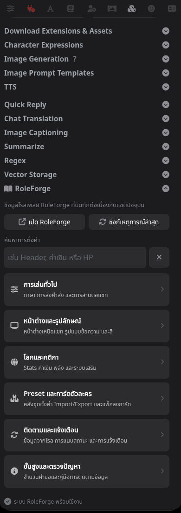
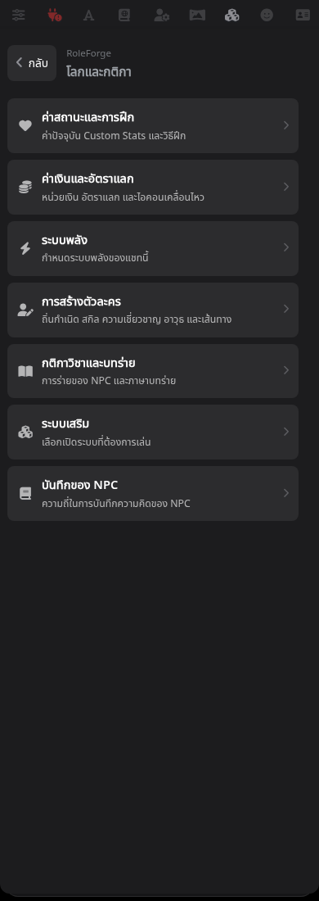
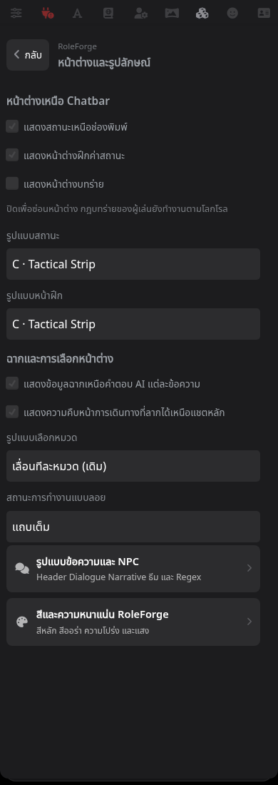
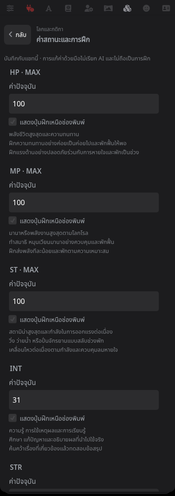
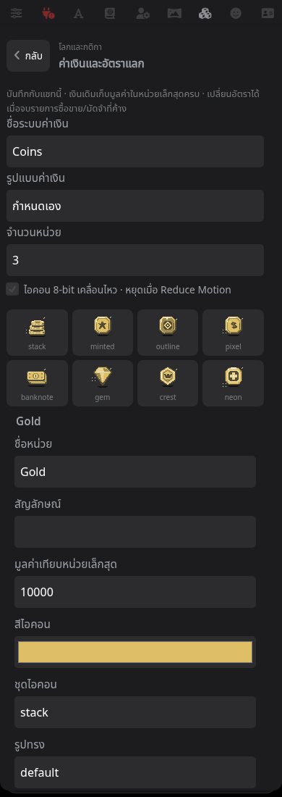
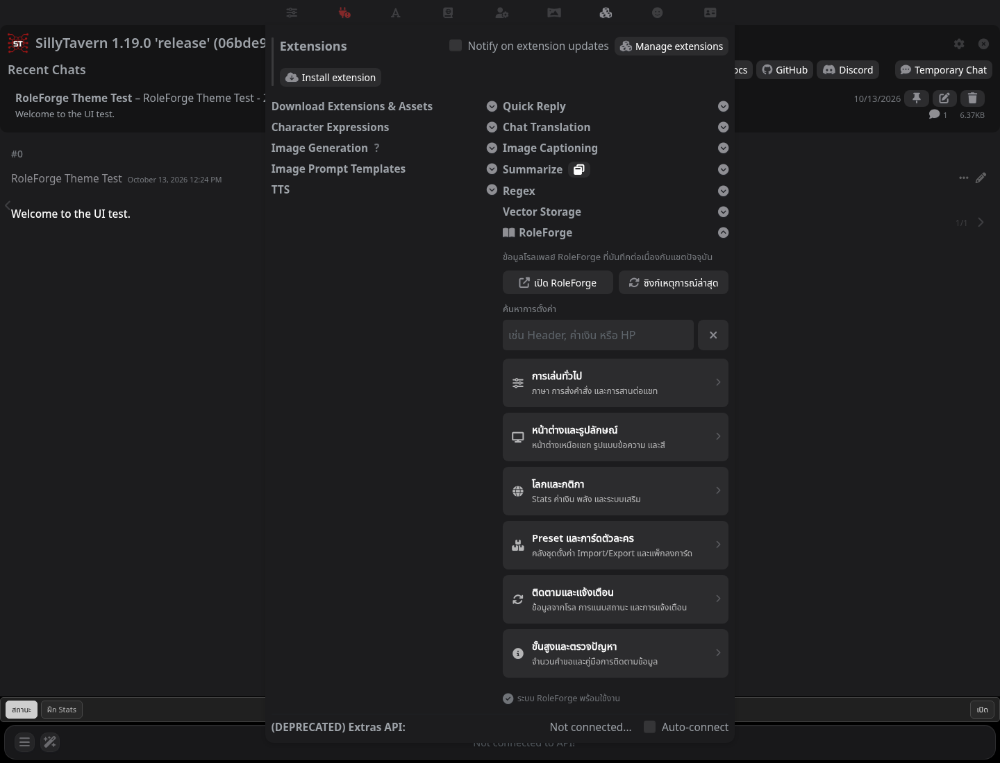
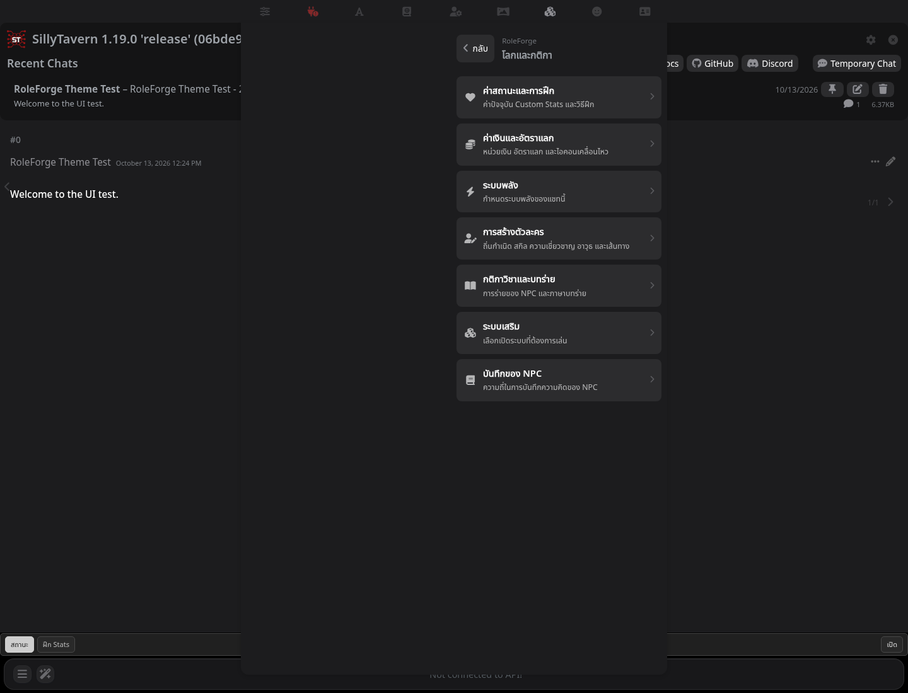
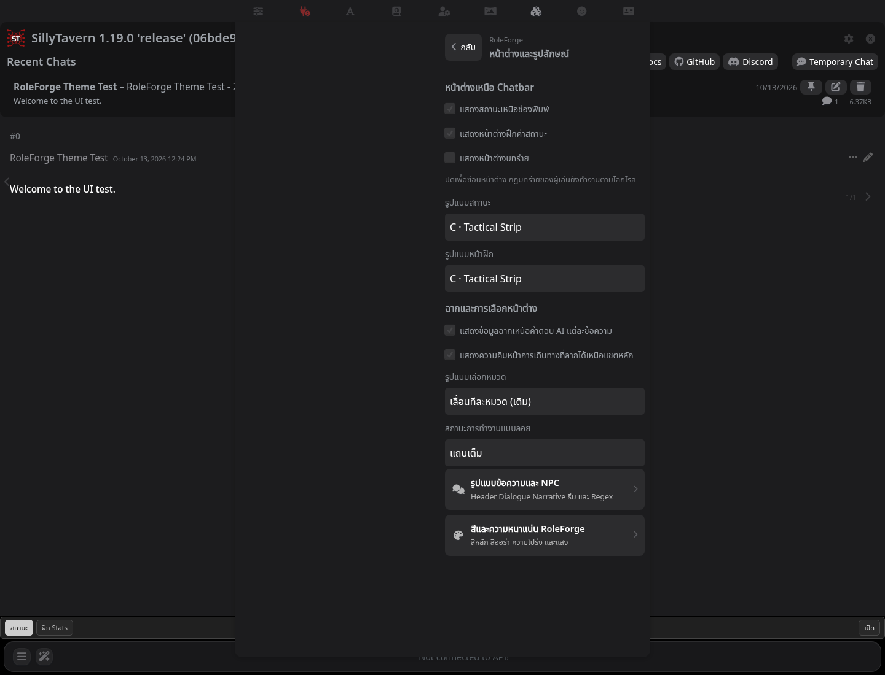
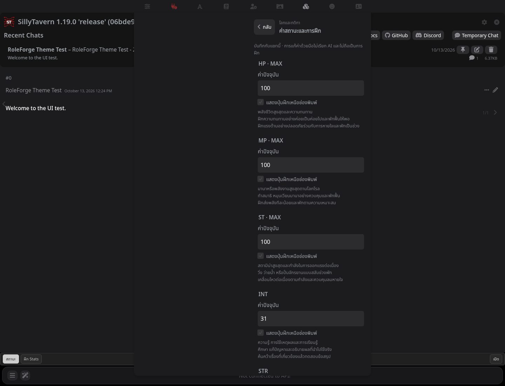
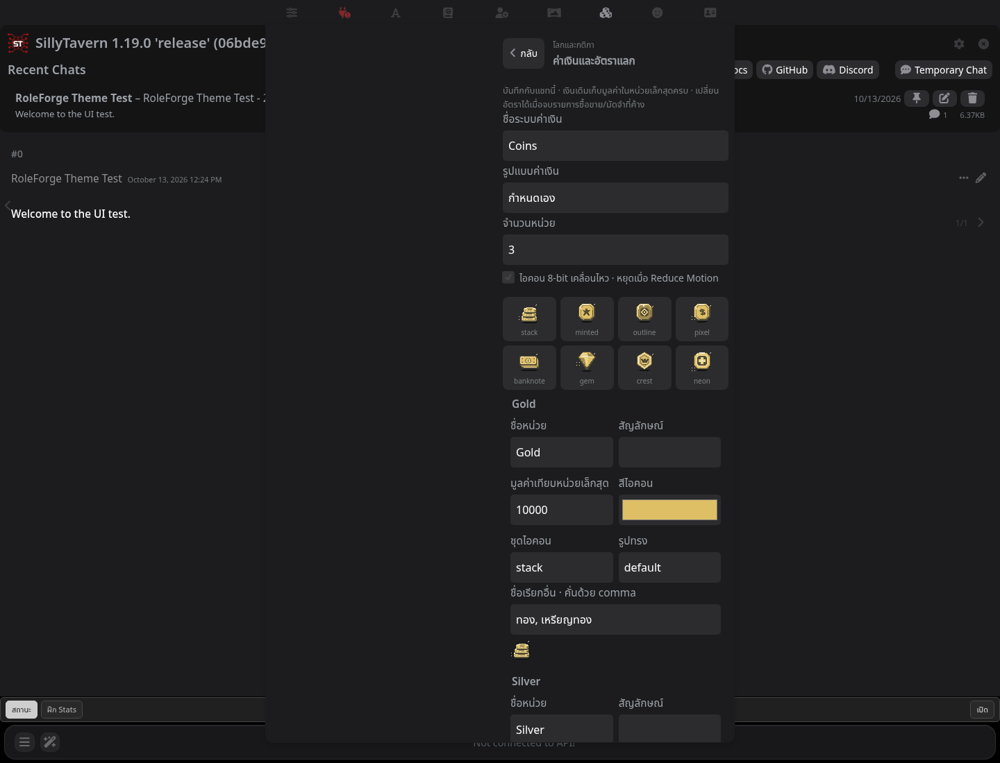
ภาพก่อนแก้ · ทำซ้ำบนตัวจริงด้วย 0.68.0
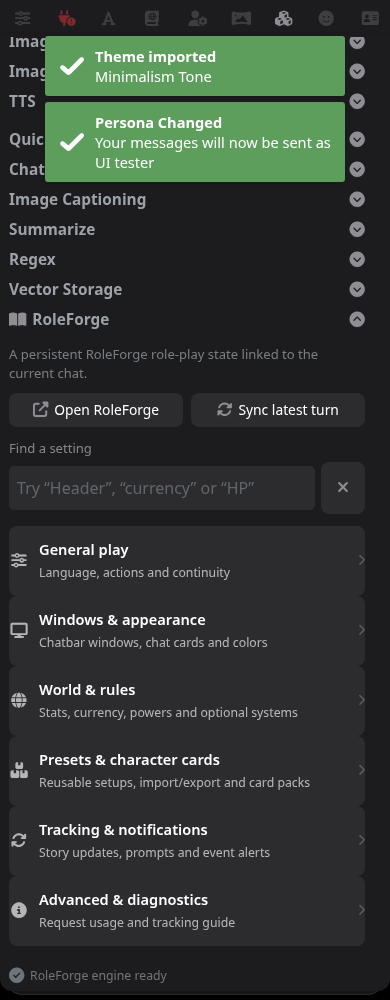
ตรวจ 20 หน้า ที่ 320/390/768/1440px, ตัวอักษรขนาดใหญ่, ร่างในฟอร์ม และการบันทึกค่าผ่านเซิร์ฟเวอร์จริงแล้ว Reload
ผลการทดสอบ · รายละเอียดการแก้ไข